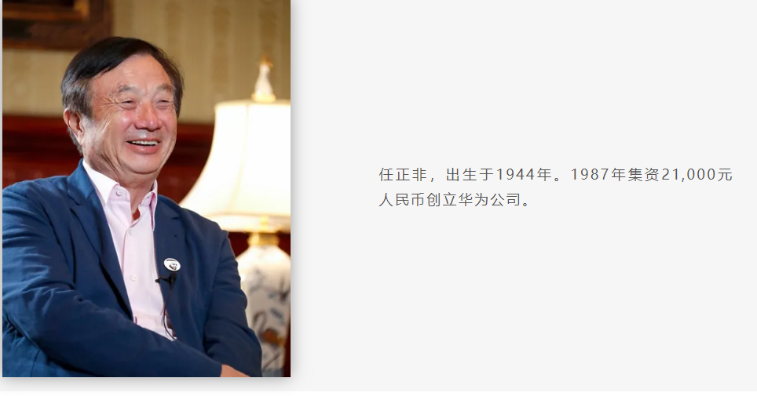

华为是一家全球领先的信息与通信技术（ICT）基础设施和智能终端提供商，成立于1987年，业务遍及170多个国家和地区，服务全球30多亿人口。华为的品牌文化是其成功的重要因素之一，深深植根于公司的战略和运营中。华为的品牌文化包括以下几个方面：
客户至上。华为始终以客户为中心，致力于满足客户需求，通过提供有价值的产品和服务来实现企业价值。
艰苦奋斗和奉献精神。华为强调以奋斗者为本，鼓励员工和企业共同成长，实现长期的发展。
创新和技术研发。华为注重技术创新和研发投入，以保持其在电信设备制造行业的领先地位。
开放合作。华为与全球多家科技公司建立合作关系，推进技术创新和国际化进程。
自我批判和持续改进。华为倡导批评与自我批评的文化，鼓励员工不断自我超越，实现个人和组织的发展。
社会责任和可持续发展。华为致力于通过其产品和服务促进社会的数字化进程，同时强调企业社会责任，促进可持续发展。
华为的企业标识采用菊花图案，红色为主色调，用以传达企业的活力、热情和专注精神。华为的品牌文化不仅体现在公司的管理和技术创新上，还贯穿于公司的日常运营和企业文化中，成为华为全球成功的重要支柱。
华为”的品牌持有者是华为技术有限公司。这是一家总部位于广东省深圳市的中国民营通信科技公司，成立于1987年，核心创始人是公司现任董事兼首席执行官任正非。起初，华为只是一个小型的通信设备销售代理商，但任正非并不满足于此。他有着更远大的梦想：打造自主的通信技术，为中国乃至全球的通信发展贡献力量。 面对激烈的市场竞争和技术挑战，华为并没有选择依赖进口产品。反而，它投入大量资金用于技术研发，坚持“以客户为中心，以奋斗者为本”的原则，勇敢迈出了自主创新的步伐。 在这个过程中，华为建立了一支高效、专业的研发团队，不断推出技术创新，逐渐从一个小企业转型为拥有自主知识产权的高科技公司。 早期，华为主要专注于通信网络设备的研发与销售，逐渐在国内市场站稳脚跟。90年代中期，华为开始布局国际市场，通过不懈努力，它的产品和服务迅速走出国门，获得了国际客户的认可。这一时期，华为的成功并不是一蹴而就的，而是依靠不断的技术创新、精细的市场策略和坚韧不拔的奋斗精神。
21世纪初，华为开始将业务拓展到了智能手机和消费电子领域。在这一领域，华为同样展现出了惊人的竞争力。 通过不断研发创新，如海思芯片、麒麟处理器等核心技术，华为手机迅速在全球市场崭露头角，成为智能手机市场的重要玩家。
在5G技术方面，华为无疑是全球的领跑者。华为不仅在5G标准的制定中发挥了重要作用，而且在5G核心技术、网络设备以及端到端解决方案方面处于行业领先地位。华为的5G技术不仅加速了全球通信网络的升级，也推动了诸如智慧城市、远程医疗、自动驾驶等多个领域的发展。 面对国际市场的复杂环境，华为更加重视核心技术的自主创新。例如，华为自主研发的麒麟系列芯片，不仅提高了智能手机的性能，更减少了对外部供应链的依赖。同时，华为也在操作系统、云计算、人工智能等领域持续进行技术创新。
关于华为名字的由来，有资料显示是当时在给公司取名时，几位创始人恰巧看到墙上一幅“心系中华，有所作为”的标语，于是就有了“华为”这个名字。